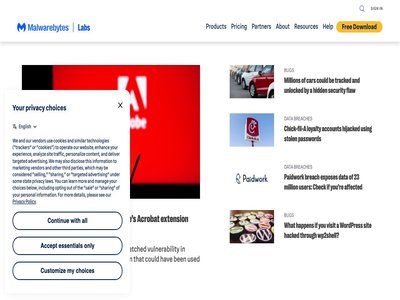

November 20, 2026 · 11 articles

ISC Stormcast For Friday, November 20th, 2026 https://isc.sans.edu/podcastdetail/10188, (Fri, Nov 20th)
November 20, 2026
(SANS ISC)

nginx2root: Five new nginx vulnerabilities, and how Cloudflare protects origins from the worst of them
November 20, 2026
Five memory corruption bugs in nginx, called nginx2root, can let an unauthenticated attacker run code on a server. Here’s how they work, and why origins behind Cloudflare's prox... (Cloudflare Blog)

Java4Shell
November 20, 2026
What is the Vulnerability? CVE-2026-114938, known as Java4Shell, is a critical heap-based buffer overflow vulnerability in the Base64 implementation of the Java standard library... (FortiGuard Labs)

Risky Bulletin: New Windows security feature will allow apps to refuse to run on insecure systems
November 20, 2026
In other news: Hackers hit the EU's HR platform; Ubuntu to let AI fix patches in Edge releases; a ton of branded vulnerabilities. (Risky Business News)

NVIDIA Investigates Ransomware Claim; Parts Supplier Was Listed Six Weeks Earlier
November 20, 2026
The Gentlemen ransomware group listed NVIDIA on its leak site on November 18 without providing any evidence of stolen data. NVIDIA is investigating a possible impact on a third-... (Joho no Todai)
Sean Cairncross out as national cyber director
November 20, 2026
During his tenure, he was involved in key administration decisions on AI security and the protection of critical infrastructure. The post Sean Cairncross out as national cyber d... (CyberScoop)
Cisco Lists 22 Products Affected by Java4Shell; IOS XE and UCS Central Not Affected
November 20, 2026
Cisco has revised its product impact assessment for the OpenJDK vulnerability Java4Shell (CVE-2026-114938). IOS XE, which powers routers and switches, is not affected, while 22... (Joho no Todai)
UK Tribunal Allows Disclosure That Government Ordered Apple to Provide Access to Encrypted Data
November 20, 2026
The UK's Investigatory Powers Tribunal ruled on November 19 that national security would not be harmed by publicly acknowledging that the government ordered Apple to provide acc... (Joho no Todai)

VMware patches vCenter zero-day exploited in attacks since September
November 20, 2026
Broadcom has released security updates to fix a critical VMware vCenter Server authentication bypass vulnerability that Chinese-linked hackers have exploited in zero-day attacks... (BleepingComputer)
Shonan Beauty Clinic Data Breach Exposes Personal Information of 1.624 Million People; Passwords Were Stored Unencrypted
November 20, 2026
SBC Medical Group, which operates Shonan Beauty Clinic and other services, announced on November 19 that unauthorized database access exposed personal information belonging to 1... (Joho no Todai)

nginx2root (CVE-2026-123007): HTTP/2 Flaw Lets Attackers Run Code on Unpatched nginx Servers
November 20, 2026
nginx 1.31.9 and 1.30.7 fix an HTTP/2 flaw that a public exploit turns into unauthenticated code execution. See what stopped the exploit in our lab, how to patch and confirm the... (StepSecurity Blog)
November 19, 2026 · 82 articles

CVE-2026-132825 and related issues - Ruby regular expression engine and string case conversion
November 19, 2026
Bulletin ID: 2026-193-AWS Publication Date: 11/19/2026 15:05 PM PST Description: On November 18, 2026, the Ruby maintainers published fixes for seven issues in CRuby's regular e... (AWS Security Bulletins)

Android developer verification will reach every install source, with a side door for power users
November 19, 2026
Google will extend Android developer verification to every country starting in January 2027, a check that already applies at participating app stores in four countries. Develope... (Help Net Security)

Qwen Incidents Show Self-Hosted AI Models Need Stronger Steering
November 19, 2026
Companies deploying AI agents have the illusion of control, but several incidents demonstrate that businesses need to be ready to enforce directions. (Dark Reading)

Your AWS Security, Identity, and Governance guide to re:Invent 2026
November 19, 2026
The AWS Security, Identity, and Governance team invites you to join us at re:Invent in Las Vegas from November 30 to December 4, 2026. You know all too well that AI agents now a... (AWS Security Blog)
ASUS Control Center Express Scores CVSS 10.0 for Hard-Coded Cryptographic Key: Attackers Can Gain Administrator Access Without Authentication
November 19, 2026
ASUS Control Center Express contains a hard-coded cryptographic key vulnerability rated the maximum 10.0 under CVSS v4.0. An unauthenticated attacker can gain administrator acce... (Joho no Todai)
Critical Synology Vulnerability CVE-2026-120382 Affects End-of-Life DSM 6.2, Which Is Missing From Official Fix List
November 19, 2026
Synology advisory SA-26:21 describes DSM 6.2 as affected by a CVSS 9.8 vulnerability, but DSM 6.2 is absent from the fix table and its release history contains no patched versio... (Joho no Todai)

Chaotic Eclipse Releases FastUnlock, a New Windows Zero-Day Vulnerability
November 19, 2026
The researcher Chaotic Eclipse released FastUnlock, a new Windows zero-day vulnerability exploiting Narrator to bypass the lock screen. Security researcher Chaotic Eclipse, also... (Security Affairs)
Debian APT to Retire Three Legacy Repository Formats: Security Takes Priority Over Compatibility as AI Research Advances
November 19, 2026
APT's maintainer has announced the removal of three legacy repository formats. Following a recent APT vulnerability and advances in AI security research, the project concluded t... (Joho no Todai)
Ransomware Group Publishes Visa, Mastercard, and JPMorgan Customer Data: Contractor Was the Entry Point
November 19, 2026
Ransomware group n0n has published customer data belonging to Visa, Mastercard, and JPMorgan Chase. No payment card numbers are known to have leaked; the attackers compromised a... (Joho no Todai)
Lawmakers launch new AI safety caucus amid rising security concerns
November 19, 2026
Seven of 26 founding members of the caucus are Republicans, a notable number given the White House’s steadfast opposition to regulating AI. (The Record)

Chase, Visa, Mastercard confirm third-party cyberattacks that may have exposed customers' info
November 19, 2026
First service outages, then data breaches…what's next?! (The Register - Security)
Introducing the new AWS WAF security analytics dashboard
November 19, 2026
When blocked requests spike or a customer reports being locked out, a security team has to work out what is happening, where it is happening, and if AWS WAF is making the right... (AWS Security Blog)

Third-Party JavaScript Is Part of Your Attack Surface: Lessons from a Recent Supply-Chain Attack
November 19, 2026
In a recent incident, visitors to websites run by some of the world’s best-known brands, including news publishers, banks, airlines, and software companies, were served maliciou... (Qualys Blog)
Second Norwegian Energy Company Breached in Two Days
November 19, 2026
No specific link has been drawn between the two incidents, though they certainly sing the same notes. (Dark Reading)
Navigating Vulnerability Hysteria in the AI Era
November 19, 2026
This installment of the Reporters' Notebook video series examines the fallout from recent high-severity flaw disclosures, exploring how fears of AI-assisted exploits trigger wid... (Dark Reading)
PHP Security Update Fixes 18 Vulnerabilities: FPM Connection Reuse Opens a Path to Remote Code Execution
November 19, 2026
Security updates fixing 18 CVEs have been released for every supported PHP branch. The most severe PHP-FPM vulnerability has a CVSS score of 9.2, although the PHP project says i... (Joho no Todai)

ThreatsDay: GPT-6.2 Jailbreak Flaws, BubbleLoader PNG Malware, $500M Ransom Demands + 17 More Stories
November 19, 2026
The easiest way to fool someone is to give them something they already expect. A job offer. A message about a service outage. A familiar app. Nothing looks strange at first. And... (The Hacker News)
CISA nominee LoSapio vows to bolster cyber defenses while denying Jan. 6 Capitol attack
November 19, 2026
President Donald Trump’s pick to lead the Cybersecurity and Infrastructure Security Agency pledged to lawmakers to uncover any “gaps” within the organization while also denying... (The Record)

PHP Releases Patches to Fix 18 Vulnerabilities
November 19, 2026
PHP has released security updates addressing 18 vulnerabilities, including critical remote code execution flaws affecting session handling (Infosecurity Magazine)
European Commission Cyberattack: ARTEX AI Tool Suspected in Prolonged Disruption
November 19, 2026
A cyberattack disrupted EU Commission services for over ten days. ARTEX is suspected, while investigators assess whether staff data was stolen. A cyberattack has disrupted inter... (Security Affairs)
European Commission Confirms AI-Driven Cyber-Attack Took Systems Offline
November 19, 2026
The European Commission said the attack targeted “individual systems”, with reports that attackers leveraged ARTEX in the campaign (Infosecurity Magazine)
Drupal patches critical RCE flaw, warns exploits may surface quickly
November 19, 2026
The Drupal Security Team has patched a critical remote code execution vulnerability that can let attackers take over vulnerable sites. [...] (BleepingComputer)

Critical Apache Roller, Axis Vulnerabilities Exploited in Attacks
November 19, 2026
Attackers are targeting Confluence Data Center through an Axis flaw and Apache is warning of attacks against Roller. The post Critical Apache Roller, Axis Vulnerabilities Exploi... (SecurityWeek)
Everything Is a Web Application, Including Your Firewall
November 19, 2026
One of the early targets of PHP2Shell exploitation was the firewall. On October 28, Palo Alto Networks confirmed that attackers were exploiting the two PHP vulnerabilities, CVE-... (The Hacker News)
TfL Warns 265,000 Photocard Customers May Have Had Personal Data Exposed
November 19, 2026
London’s transport body was alerted to the incident after emails were sent from TfL’s system to Oyster Photocard customers (Infosecurity Magazine)

RMM Alerts at 2 AM: An MSP and SOC Incident Response Story
November 19, 2026
One compromised account, two rogue ScreenConnect deployments, and $3M in downtime. See how TruePath IT and the Huntress SOC handled RMM alerts at 2am. (Huntress Blog)

Why the Harness Matters: Early Lessons From the Evo Code Scanning Agent Preview
November 19, 2026
In early tests, Evo Code Scanning Agent’s security harness found more known vulnerabilities than Claude Security and Codex Security at the same compute budget, with lower precis... (Snyk Blog)
How AWS Security Incident Response triages your security findings
November 19, 2026
AWS Security Incident Response continuously triages the threat findings from Amazon GuardDuty and AWS Security Hub CSPM, but most of that work never shows up as a case. If cases... (AWS Security Blog)

The internet needs a nap (and you do, too)
November 19, 2026
Bill takes a break from the non-stop breaking news to promote prioritizing environmental awareness and team stability over reactive patching. (Cisco Talos)
Nvidia adds possible hack to list of very bad things under investigation
November 19, 2026
Ransomware group sets a deadline for the chipmaker to pay up - or see its data leaked (The Register - Security)

Deepfake Elon Musk nearly costs viewers $4.7 million in crypto
November 19, 2026
Coinbase says it blocked $4.7 million in attempted payments to an Elon Musk deepfake scam. (Malwarebytes Labs)
DOJ, DHS partner on new unit tackling scams and cybercrime
November 19, 2026
The departments are partnering on the Threat Disruption Center to better triage victim complaints, map cybercriminal networks and provide a direct channel to private sector orga... (The Record)
phpAfterShell Explained: How Hackers Could Turn a PHP Session Flaw Into Code Execution
November 19, 2026
PHP's default file-based session storage can be made to return objects an attacker chose, by cutting off a session write at the right moment. When combined with a second weaknes... (The Hacker News)
UK court confirms British government served Apple with secret encryption notice
November 19, 2026
The British government served Apple with a secret legal notice targeting the company’s cryptographic protections for iCloud accounts, a tribunal has confirmed, ending almost two... (The Record)

Identity context is essential for exposure management: Tenable One adds ways to bring in identity security data
November 19, 2026
Tenable One now ingests identity findings from third-party sources, allowing you to assess and prioritize exposures related to stale and overprivileged accounts alongside your o... (Tenable Blog)
PHP Patches Seven Critical RCE Vulnerabilities
November 19, 2026
Successful exploitation could allow attackers to crash the worker process and execute code with the PHP worker’s privileges. The post PHP Patches Seven Critical RCE Vulnerabilit... (SecurityWeek)
CyberPower PowerPanel Exploited to Run Malicious Code on Domain Controller
November 19, 2026
Symantec found an attacker using CyberPower’s UPS software to run scripts on a domain controller (Infosecurity Magazine)
PHP 8.6 is out, and here’s what changes for your code
November 19, 2026
PHP 8.6 has been released. The new version adds partial function application, a Time\Duration class, a polling API for event loops and a clamp() function. PHP 8.6 also changes d... (Help Net Security)

Spying on Governments with Zero Lines of Malware: A Custom SoftEther Bridge in Webworm’s Toolkit
November 19, 2026
Introduction For a threat actor, the perfect malware is one they don’t have to write, and already does all they need. One example of this is shown by the China-aligned APT known... (Rapid7 Blog)
Five warning signs of ransomware breach before encryption or data theft
November 19, 2026
Ransomware attacks often involve credential theft, lateral movement, and attempts to disable security controls long before encryption begins. Acronis examines five warning signs... (BleepingComputer)
Russian spies turn one cloud breach into a stepping stone for the next
November 19, 2026
A Russian cyberespionage group is posing as employees of organizations it has already breached to phish new targets, Google Threat Intelligence Group (GTIG) found. Google tracks... (Help Net Security)
Internet traffic and attacks during the 2026 U.S. midterm elections
November 19, 2026
On November 3, 2026 U.S. voters headed to the polls. Here’s what Cloudflare data across more than 1,400 protected sites tells us about Election Day Internet traffic and cyberatt... (Cloudflare Blog)
Why Holiday Security Can't Wait for Black Friday
November 19, 2026
Bot-driven fraud and holiday social engineering attacks stretch across many weeks, straining security teams and small businesses alike. (Dark Reading)

ARMORY CASTLE Exploits vSphere
November 19, 2026
Written by: Jayson Frost, Bryce Greathouse, Dhanesh Kizhakkinan, John Palmisano, Steve Rasch, Daniel Sislo, John Wolfram Introduction On Oct. 15, 2026, Mandiant and Google Threa... (Google Threat Intelligence)
Ukraine exposes ransomware network extorting US oil, healthcare firms
November 19, 2026
Ukrainian authorities arrested four suspected members of an international ransomware network accused of extorting more than $40 million from companies around the world. (The Record)

30 Years of Gatekeeper Asymmetry Doom: The Paradox that Makes Powerful LLMs More Vulnerable
November 19, 2026
Abstract We give an exposition for a principle of gatekeeper asymmetry doom in information security, which states that “If the system vetting adversarial input has strictly less... (Check Point Research)
Hackers Exploit Cisco Expressway Vulnerability Soon After PoC Release
November 19, 2026
Attackers hacked clustered Cisco Expressway devices at a Russian organization and prepared tooling for lateral movement. The post Hackers Exploit Cisco Expressway Vulnerability... (SecurityWeek)
Credential stealer slipped into Microsoft’s official Python agent framework
November 19, 2026
Two releases of Microsoft’s official agent-framework package on the Python Package Index (PyPI) carried code that steals cloud and CI/CD credentials from developers’ systems. Ag... (Help Net Security)
Chrome patches six critical flaws, two found with AI’s help
November 19, 2026
Chrome 158 fixes 204 security issues, including six critical flaws. Here’s what to update. (Malwarebytes Labs)
StepSecurity Secures $20 Million to Expand Supply Chain Protection
November 19, 2026
The company will use the funds to accelerate the development and distribution of its security platform. The post StepSecurity Secures $20 Million to Expand Supply Chain Protecti... (SecurityWeek)
The Governance Gap in Open-Weight AI and What to Do About It
November 19, 2026
Lower costs, data privacy, and greater control are driving open-weight AI adoption, but many organizations are not addressing the risks that come with it. The post The Governanc... (SecurityWeek)

Financial Services Cybersecurity vs. ARTEX: Credentials in Plain Sight
November 19, 2026
Microsoft says Storm-3358 has used ARTEX against financial institutions since October 2026. GitGuardian found secrets in 6.9% of active finance-linked public GitHub repositories... (GitGuardian Blog)
Microsoft tests new Edge Lockdown Mode that disables GPU APIs
November 19, 2026
Microsoft is developing a new Edge security feature to reduce the attack surface by disabling the WebGL, WebGL2, and WebGPU APIs. [...] (BleepingComputer)

Java4Shell (CVE-2026-114938): CrowdStrike Detects Exposure and Post-Exploitation Activity
November 19, 2026
(CrowdStrike Blog)
BackBox Linux 10 brings new hacking tools and Ubuntu 26.04 support
November 19, 2026
BackBox Linux is a free, open source penetration testing distribution made by BackBox, a non-profit community project that keeps its own repositories of ethical hacking tools. O... (Help Net Security)
TfL takes Oyster photocard website offline after attackers compromise customer accounts
November 19, 2026
Around 265,000 customers potentially affected as London transport operator grapples with another security breach (The Register - Security)
Rubrik Configuration Resilience rolls back unauthorized Microsoft 365 changes
November 19, 2026
Rubrik announced Configuration Resilience for Microsoft 365, a new offering that protects the key settings governing Microsoft applications such as Microsoft 365, Purview and De... (Help Net Security)
SonicWall urges customers to replace Gen 6 firewalls now
November 19, 2026
SonicWall is urging customers still running Gen 6 firewalls to replace them immediately and to stop using them at the internet edge. All Gen 6 and Gen 6.5 appliances running Son... (Help Net Security)
Splunk Patches Nearly 140 Flaws Across Three Core Products
November 19, 2026
The security updates resolve critical and high-severity issues leading to authentication bypass, remote code execution, and privilege escalation. The post Splunk Patches Nearly... (SecurityWeek)
Bitwarden expands passkey support with new Windows and macOS integrations
November 19, 2026
Bitwarden announced expanded passkey integrations across Windows and macOS, making it easier to access Bitwarden and use passkeys through native operating system authentication.... (Help Net Security)
Microsoft confirms app installation, launch issues after hotpatch
November 19, 2026
Microsoft has shared a workaround for installation and launch issues affecting Office and third-party applications after installing this month's Windows 11 hotpatch. [...] (BleepingComputer)
A Fifth of UK Employees Share Passwords with AI
November 19, 2026
Dashlane research reveals UK workers are sharing passwords with AI tools and granting access to sensitive data, raising major enterprise security concerns (Infosecurity Magazine)
Palo Alto Networks to acquire Applied Compute for $4.5 billion
November 19, 2026
Palo Alto Networks will acquire Applied Compute, a platform for post-training and inference of open-weight AI models. The all-stock transaction is valued at $4.5 billion, subjec... (Help Net Security)
Sticky note on monitor provided keys to the company’s kingdom
November 19, 2026
Don't leave your credentials out in public, where any visitor can see them. (The Register - Security)
GTA 6 scams are after your Google password, money, and crypto wallet
November 19, 2026
Scammers are using the GTA 6 launch to steal Google passwords, sell game keys that may never arrive, and get players to connect crypto wallets. Stefan Dasic, a senior malware re... (Help Net Security)
Ukraine arrests key members of ransomware gang that extorted $40.5 million posing as IT support
November 19, 2026
Four key members of a ransomware group that took more than $40.5 million from at least 28 companies have been detained in Ukraine. The group’s members posed as IT support staff... (Help Net Security)
Scattered Spider’s phishing and SIM-swap tactics led to six-year sentence
November 19, 2026
Scattered Spider used fake texts to break into systems and SIM swaps to intercept security codes. Here’s how to protect your number. (Malwarebytes Labs)
Hackers Breach N-able Cloud Server, Disrupting Email Security Management Across 3 Regions
November 19, 2026
N-able on Wednesday disclosed that unknown threat actors gained unauthorized access to one of the servers in the Mail Assure and Spam Experts Hosted Cloud, causing it to disable... (The Hacker News)
Rakuten Securities Breach Could Impact 15 Million Customers
November 19, 2026
Japanese broker Rakuten Securities has revealed a data breach involving the account details of 15 million customers (Infosecurity Magazine)
Java4Shell Exploitation Attempts Begin as Vendors Rush Out Advisories
November 19, 2026
GreyNoise, WatchTowr and Cloudflare report probing and exploit attempts, while Cisco, Elastic, Red Hat and Siemens detail impact. The post Java4Shell Exploitation Attempts Begin... (SecurityWeek)
Researcher Demonstrates Database RCE Exploits Affecting PostgreSQL, MySQL and Oracle
November 19, 2026
Low-privilege database accounts that cannot read a single application table can still be used to run code on the database server itself, a researcher has shown, by reaching memo... (The Hacker News)
Africa Retakes Top Spot as Most Attacked Region, Led by Nigeria Surge
November 19, 2026
Nigeria faced more than double the cyber threats of the previous year, with Angola and Kenya also in the top-5 most attacked countries globally. (Dark Reading)
PHP Readies Critical Security Updates to Patch Another RCE Flaw
November 19, 2026
Affecting the session upload progress, CVE-2026-115560 was publicly disclosed two days after PHP2Shell patches landed. The post PHP Readies Critical Security Updates to Patch An... (SecurityWeek)
Srsly Risky Biz: Phew! Some Regulatory Relief for AI Hacks
November 19, 2026
Your weekly dose of Seriously Risky Business news is written by Tom Uren and edited by Patrick Gray and Amberleigh Jack. This week's edition is sponsored by Thinkst . You can he... (Risky Business News)
Microsoft Adopts Intel Foundry EMIB for Custom Azure Chips and Secures Multiyear Xeon Supply
November 19, 2026
Microsoft and Intel announced an expansion of their long-term Azure collaboration on November 18 in the United States. Microsoft will use Intel Foundry's EMIB for custom Azure c... (Joho no Todai)
Democrat Garcia Tells 12 Trump Family Members and Allies to Preserve Records, Plans Probes Into Conflicts, DHS Fraud, and Epstein Cover-Up
November 19, 2026
Ahead of taking control in January, the incoming Democratic chair of the House Oversight Committee has asked 12 members of President Trump's family, Cabinet, and inner circle to... (Joho no Todai)
Treat Your Honeypot Analysis Like Code: Git, Pull Requests and a Human Gate for AI [Guest Diary], (Wed, Nov 18th)
November 19, 2026
[This is a Guest Diary by Kevin Truong, an ISC intern as part of the SANS.edu BACS program] (SANS ISC)

Runtime security for Amazon EKS Auto Mode with Sysdig
November 19, 2026
Amazon EKS Auto Mode hands node management to AWS, giving you immutable, Bottlerocket-based nodes with read-only root filesystems and no kernel module loading. But the shared re... (Sysdig Blog)

Regional Insights: 2027 State of Threat Intelligence
November 19, 2026
Regional findings from the 2027 State of Threat Intelligence report: how security teams in North America, EMEA, APJ, and LATAM use intelligence and AI. (Recorded Future)

What CISOs and CTOs need to do to minimize agentic risk in 2027
November 19, 2026
AI is reshaping cybersecurity. Learn seven actions CISOs and CTOs can take to secure AI agents, modernize software, and prevent emerging threats. (Chainguard Unchained)
Announcing the Athena Partner API
November 19, 2026
Discover how Chainguard's Athena Partner API helps security partners deliver non-patch protections against AI-discovered vulnerabilities at scale. (Chainguard Unchained)
PHP's November security release: What it is and what to update
November 19, 2026
PHP's November 2026 security update fixes 17 CVEs, including seven critical vulnerabilities. Learn who's affected, how to patch, and what to update. (Chainguard Unchained)
November 18, 2026 · 27 articles
Detecting cross-cloud lateral movement with AWS Security Hub
November 18, 2026
Most organizations run a multicloud estate, and so do the attackers targeting them. An adversary who compromises an identity in one provider follows that identity wherever it le... (AWS Security Blog)
Russia's Cold Relic APT Turns One Cloud Breach Into Another
November 18, 2026
The state-sponsored threat group is using data stolen from one victim to target others via convincing impersonations and social engineering attacks. (Dark Reading)
Suspected Chinese APT Rebuilds EggStreme Malware After Exposure
November 18, 2026
Suspected Chinese APT rebuilt EggStreme malware and infrastructure after Bitdefender exposure (Infosecurity Magazine)

CISA Adds Four Known Exploited Vulnerabilities to Catalog
November 18, 2026
CISA has added four new vulnerabilities to its Known Exploited Vulnerabilities (KEV) Catalog , based on evidence of active exploitation. CVE-2024-10441 Synology DiskStation Mana... (CISA Current Activity)
Three AI Models Agree on Just One of 121 Potential Code Flaws
November 18, 2026
Echo tested Claude Mythos, GPT-5.6 Sol and GLM-5.3 on the same code and found little overlap (Infosecurity Magazine)
Introducing the StepSecurity Secure Registry Community Tier, Integrated with Harden-Runner
November 18, 2026
Today, we’re making the StepSecurity Secure Registry available for free as part of our community tier, and integrating it with Harden-Runner to make it easier to adopt in GitHub... (StepSecurity Blog)
UK MPs want AI watchdog with power to pull the plug on dangerous models
November 18, 2026
Parliamentary committee says tech giants can't be left to mark their own homework when it comes to AI safety (The Register - Security)
Risky Bulletin: Hackers hijack Optimizely to deliver malware on 178 popular sites
November 18, 2026
In other news: Hackers breach Japan's supercomputer; Edge is getting a Lockdown Mode; EU sanctions NoName057(16). (Risky Business News)
New StepSecurity Control: Audit GitHub Fork PR Workflow Approval Policies
November 18, 2026
StepSecurity’s new control flags GitHub organizations and public repositories that let fork pull request workflows run without approval. (StepSecurity Blog)
Another critical PHP security release has dropped
November 18, 2026
At least one dangerous RCE bug gota fix on Thursday (The Register - Security)
Russian Espionage Actor Star Blizzard Focuses on Cloud Identities for Mass Data Theft
November 18, 2026
New Google analysis of Star Blizzard, aka Cold Relic, highlighted the group’s growing focus on compromising cloud environments to steal data and facilitate further attacks (Infosecurity Magazine)
CVE-2026-114938: Critical vulnerability in OpenJDK Java
November 18, 2026
Cisco Talos is tracking the disclosure of a critical vulnerability in OpenJDK Java (CVE-2026-114938), dubbed “Java4Shell,” with a CVSS 4.0 score of 9.2 that may lead to unauthen... (Cisco Talos)
Microsoft Takes Perception Agentic Security Platform Out of Preview
November 18, 2026
Four blue team agents and the Recon Agent are now generally available, while integrations and vulnerability shielding are in preview. The post Microsoft Takes Perception Agentic... (SecurityWeek)
65 Characters to RCE: Inside the Java4Shell Vulnerability
November 18, 2026
Calif disclosed Java4Shell, a critical OpenJDK Base64 bug enabling pre-auth RCE in Jenkins, Jira, Keycloak and more. Patches are out. Update now. Calif researchers disclosed Jav... (Security Affairs)

Who was that trying to phone me just now? How one-ring phone scams work
November 18, 2026
Sometimes it only takes one ring to get your attention - here’s how to keep “wangiri” scammers at bay (ESET WeLiveSecurity)
Harden-Runner Brings Runtime Security Inside Kata and Nitro Runner Pods
November 18, 2026
Harden-Runner monitors GitHub Actions jobs and enforces egress policies inside runner microVMs on Kata Containers and Amazon EKS Nitro Sandboxes. (StepSecurity Blog)
Step-up authentication: how to right-size authentication to risk
November 18, 2026
Not every action a user takes in an application carries the same risk. Viewing an account balance in a banking application isn’t the same as wiring several thousand dollars to a... (AWS Security Blog)
An updated Clairic and Clairic-flash are now open-weight, from the new Workers AI Superintelligence team
November 18, 2026
Add your teaser here. It should complement the headline, not repeat it. Teaser cannot be longer than 240 characters. The Blog Review Gem will suggest an excerpt. Clairic graduat... (Cloudflare Blog)
AI found more critical bugs in another widely used technology running 225M websites
November 18, 2026
Open source NGINX joins patchapalooza (The Register - Security)
Consensus mounts that tech outages were fueled by patching of AI-discovered vulnerabilities
November 18, 2026
But cyberattacks aren’t directly to blame, Trump administration officials said. The post Consensus mounts that tech outages were fueled by patching of AI-discovered vulnerabilit... (CyberScoop)
Strike Graph Launches Integration AI to Automate Continuous Compliance Evidence Using Any Existing Tool
November 18, 2026
New agentic AI solution leverages APIs to collect compliance evidence from systems and applies it to over 30 frameworks with no duplicate work. (Dark Reading)
Judge signs off on sale of Spirit Airlines’ data to Google
November 18, 2026
Google can take possession of defunct Spirit Airlines' data for $10 million, a federal bankruptcy judge has ruled. The tech giant agreed to protections as it plans to use the da... (The Record)
AttackIQ Research Reveals How Iranian Cyber Groups Hand Off Network Access to Enable Destructive Attacks
November 18, 2026
Analysis of 20 Iranian state-sponsored threat groups details how espionage, ransomware, and hacktivism intersect in state-backed cyber campaigns. (Dark Reading)
Trump administration officials size-up a bad stretch for tech
November 18, 2026
Homeland Security Secretary Markwayne Mullin said the administration will reach out to industry to get companies to share more information about big patches before they take eff... (The Record)
Last of Five Defendants Sentenced in US Scattered Spider Hacking Case
November 18, 2026
British national Tyler Robert Buchanan has been sentenced to 6 years in prison in the United States, the DOJ announced. The post Last of Five Defendants Sentenced in US Scattere... (SecurityWeek)
Critical Perforce Puppet RCE Exploited in Attacks
November 18, 2026
Tracked as CVE-2026-115731, it allows a client that holds any CA-signed agent certificate to execute code on the server. The post Critical Perforce Puppet RCE Exploited in Attac... (SecurityWeek)
CrowdStrike Is Building the Engine of the Agentic SOC with Falcon Next-Gen SIEM
November 18, 2026
(CrowdStrike Blog)